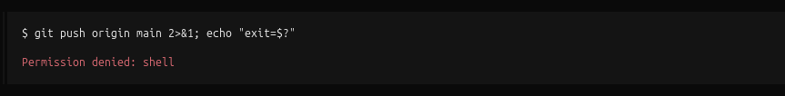
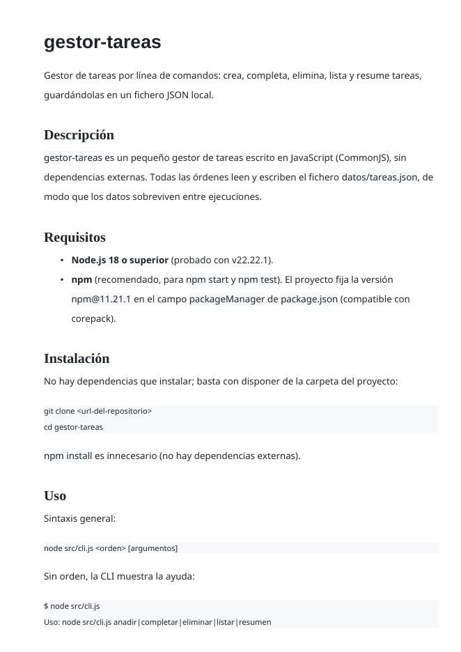

Resolución completa — enunciados, comandos y salidas reales
Alumno: RD · Fecha: 16 de octubre de 2026
Entorno: OpenCode v2.0.16 (modelo activo comprobado con /models: DeepSeek
V4.1 Flash Free, proveedor opencode) · Node.js v22.22.1 · npm 11.21.1 (fijado con corepack) · Git
2.53.0 · LibreOffice 26.2.5.2 · markdown-it-py 3.0.0 · Ubuntu (GNOME)
Repositorio: /home/rd/Practica2OpenCode · rama main · 15 commits
(el último, este informe) · sin remoto configurado · subidas a remoto prohibidas por
configuración
Este documento resuelve los nueve ejercicios de la práctica. Para cada uno se incluye el
enunciado, qué se hizo y la evidencia en forma de comandos ejecutados y sus salidas reales
(algunas salidas largas se abrevian indicándolo). Además se incluye una captura de pantalla real
del bloqueo de git push. El diario completo de prompts se mantiene en
prompts.md, dentro del repositorio.
Enunciado. Copia gestor-tareas a tu carpeta de trabajo, inicializa un repositorio Git y haz un commit con el proyecto tal cual («Proyecto de partida»). Arranca opencode dentro de la carpeta y comprueba el modelo activo con /models. En modo Plan pídele: «explica qué hace este proyecto, qué ficheros lo componen y cómo se ejecuta». Captura la respuesta y comprueba tú que los ficheros y los comandos que cita existen de verdad.
gestor-tareas a la carpeta de trabajo y se inicializó el repositorio con
la rama main; primer commit con el proyecto sin tocar: «Proyecto de partida»./models: DeepSeek V4.1 Flash Free (modelo
gratuito, como advierte la práctica: conviene ser explícito en los prompts y verificar más).datos/tareas.json. La forman cuatro
ficheros: package.json (metadatos y scripts npm start y
test), src/cli.js (interfaz de línea de comandos: interpreta
process.argv y despacha las órdenes anadir, completar,
eliminar, listar y resumen; sin orden imprime la ayuda),
src/tareas.js (lógica de negocio y persistencia en JSON; exporta seis funciones) y
datos/tareas.json (array de tareas con id, texto,
prioridad y hecha). Se ejecuta con node src/cli.js <orden>
o npm start -- <orden>, y las pruebas (cuando existan) con
npm test (runner node:test)».completar, la tarea marcada no era la esperada. Se confirmó y corrigió más adelante
(ejercicio 6), que es exactamente donde la práctica lo pide.Enunciado. Ejecuta /init para que genere el fichero AGENTS.md. Léelo entero, corrige lo que no sea cierto y añade al menos cuatro normas del proyecto: documentación y commits en español, comentarios JSDoc en src/, mensajes de commit «Añade…/Corrige…», y prohibición de subir cambios al remoto. Explica para qué sirve este fichero y por qué se versiona.
AGENTS.md (equivalente a /init) explorando
el repositorio, y se revisó línea a línea.test/ que
no existía. Se comprobó con ls y se eliminó la referencia:Es el fichero donde el proyecto describe qué es el repositorio y cómo se trabaja en
él: contexto (estructura, comandos) y normas (idioma, estilo de documentación, formato de
commits, prohibiciones). Los agentes de IA lo leen al empezar y así no reinventan el contexto ni
proponen cambios que van contra las reglas del equipo. Se versiona porque es un artefacto
más del proyecto: evoluciona con él, sus cambios se revisan en los diffs como cualquier otro
fichero y garantiza que cualquier persona o agente que se incorpore vea las mismas normas vigentes
en cada momento. En este repositorio se puede comprobar con git log AGENTS.md.
Enunciado. Crea el fichero opencode.json del proyecto para que el agente: pregunte antes de ejecutar órdenes del sistema, tenga prohibido git push y rm, no pueda leer .env ni escribir fuera de src/, test/ y docs/, y no pueda compartir la sesión. Demuestra con una captura que un git push pedido al agente queda bloqueado.
Las reglas se evalúan en orden y gana la última que coincide; por eso las prohibiciones y los permisos concretos van después de las reglas generales:
| Regla | Efecto |
|---|---|
shell:* → ask | Pregunta antes de ejecutar cualquier orden del sistema (con diálogo de aprobación). |
git push * → deny | Subida al remoto prohibida (ni siquiera se ejecuta). |
rm * → deny | Borrado con rm prohibido. |
read *.env* → deny | No puede leer ficheros .env (secretos). |
edit * → deny | No puede escribir nada salvo lo que permiten las reglas siguientes. |
edit src/*, test/*, docs/* → allow | Escritura permitida solo en código, pruebas y documentación. |
edit README.md, AGENTS.md, prompts.md, opencode.json → allow | Excepciones para los ficheros de la raíz que la propia práctica exige crear y editar (ver anexo B). |
"share": "disabled" | La sesión no se puede compartir (campo soportado por compatibilidad; /share existe en OpenCode V2 y respeta esta configuración). |

Captura real de la sesión: el intento de git push origin main pedido al agente queda bloqueado («Permission denied: shell»).
Además de la política de permisos, no existe remoto configurado, de modo que un
git push tampoco tendría destino: doble protección.
Enunciado. Pide al agente que documente con JSDoc las seis funciones de src/tareas.js (@param, @returns, @throws y un @example). Revisa una por una: la descripción debe coincidir con lo que hace el código. Anota al menos una descripción incorrecta o inventada y corrígela.
leer,
anadir, completar, eliminar, pendientes,
resumen) y también la interna guardar, con descripción,
@param (cuando procede), @returns, @throws y
@example.resumen(): decía que
devolvía un número de tareas pendientes, cuando devuelve un objeto. Corregida antes del
commit (antes/después más abajo).completar(): la
descripción habla del id de la tarea, pero el código usaba el argumento como
índice del array. Se dejó anotada y se resolvió con la prueba y la corrección del
ejercicio 6 (donde el JSDoc se actualizó para reflejar el error que se lanza).Antes (incorrecta):
Después (corregida, comprobada contra la salida real
{ total: 3, hechas: 0, pendientes: 3 }):
| Función | Revisión (¿coincide con el código?) | Resultado |
|---|---|---|
leer() | Devuelve [] si no hay fichero; JSON.parse puede lanzar SyntaxError. | ✔ correcta |
guardar() | Sustituye el contenido y crea la carpeta si falta. | ✔ correcta |
anadir() | Id = máximo + 1; prioridad por defecto 2; la tarea nace sin hecha. | ✔ correcta |
completar() | La descripción habla del id; el código usaba el argumento como índice. | ✘ incoherencia → ejercicio 6 |
eliminar() | Filtra por id y devuelve cuántas quedan. | ✔ correcta |
resumen() | Decía devolver un número; devuelve {total, hechas, pendientes}. | ✘ corregida aquí |
Enunciado. Pídele un README.md con: título, descripción, requisitos, instalación, uso con un ejemplo por cada orden de la CLI, estructura de carpetas, formato de datos/tareas.json, autoría y licencia. Ejecuta todos los comandos del README: corrige los que no funcionen o den una salida distinta a la documentada y deja constancia de la corrección.
anadir,
listar, completar, eliminar, resumen), atajos
con npm, estructura de carpetas, formato de datos/tareas.json, autoría y licencia.git restore).prompts.md y en el commit correspondiente.| Elemento | Documentado | Real | Corrección |
|---|---|---|---|
anadir | Tarea 4 creada con prioridad 2 | Tarea creada con id 4 | Salida corregida en el README; además se aclaró que la CLI solo acepta el texto (la prioridad no se puede indicar todavía). |
eliminar | Eliminada; quedan 3 tareas | Eliminada | Salida corregida y se anotó que si el id no existe los datos no cambian. |
| Atajo npm | npm run listar | npm error Missing script: "listar" | Atajo inexistente eliminado; se conserva el correcto npm start -- listar. |
completar | Muestra la tarea con id 1 | Mostraba la tarea con id 2 | No era un error de documentación: era un fallo del código (el README documentaba el comportamiento correcto). Se resolvió en el ejercicio 6. |
Commit de la corrección:
Enunciado. El proyecto tiene un fallo: node src/cli.js completar 1 no marca la tarea que debería. Sin decirle cuál es el fallo, pide al agente que escriba en test/ una prueba con node:test que lo demuestre y ejecútala con npm test (debe fallar). Solo después, pídele que corrija src/tareas.js y vuelve a ejecutar las pruebas (deben pasar). Adjunta las dos salidas y explica en qué consistía el error.
La función completar(id) usaba el argumento como índice del array:
Como los id de las tareas empiezan en 1 y los índices del array en 0, había un
desfase de uno: completar 1 marcaba la segunda tarea, completar 2
la tercera y completar 3 provocaba un TypeError (índice fuera del array).
El error pasaba desapercibido porque «parecía funcionar»: cambiaba algo y no lanzaba error en el
caso 1.
La corrección busca la tarea por su id con find() y lanza un error
claro si no existe. Además se actualizó el @throws del JSDoc para reflejarlo.
La salida coincide ya con la documentada en el README. La prueba protege los datos reales: antes
de cada test guarda una copia de datos/tareas.json y la restaura al terminar.
Enunciado. Pide al agente que prepare los cambios en commits separados (documentación, pruebas y corrección) con mensajes en español. Antes de cada commit revisa git diff --staged. Después, crea con él docs/control-de-versiones.md: instalación y configuración de Git usada, flujo de trabajo, convención de mensajes y cómo revisar lo que hace un agente antes de confirmarlo. Verifica el historial con git log --oneline --graph.
La documentación, la prueba y la corrección se prepararon en tres commits distintos, con el
diff de cada uno revisado con git diff --staged antes de confirmarlos (en el
ejercicio 6 se muestra uno de esos diffs):
RD <rd@example.com>;
repositorio creado con git init -b main; sin remoto configurado (las subidas están
prohibidas por AGENTS.md y por opencode.json).main;
git restore para deshacer cambios sin confirmar.git status y git diff: ver qué ficheros toca y qué cambia.git diff --staged: revisión final de lo que se va a confirmar.npm test y los comandos del README): la
evidencia es la salida, no la respuesta del agente.opencode.json: aprobación de órdenes, prohibiciones
explícitas y límites de escritura.git log --oneline --graph y git show.El historial anterior es el estado justo antes de crear este informe; el commit que añade el informe y su registro queda como último commit del repositorio.
Enunciado. Convierte el README.md a HTML y a PDF (extensión Markdown PDF de VS Code, Pandoc o el propio navegador) y añade al README una tabla que compare los tres formatos: ventajas, inconvenientes y cuándo usar cada uno.
bash docs/convertir-readme.sh usa
docs/md-a-html.py (Markdown → HTML con markdown-it-py) y LibreOffice
(soffice --headless, HTML → PDF). El resultado vive en docs/README.html
y docs/README.pdf.
Primera página de docs/README.pdf, generado automáticamente desde el README en Markdown.
| Formato | Ventajas | Inconvenientes | Cuándo usarlo |
|---|---|---|---|
Markdown (README.md) |
Fácil de escribir y editar; se versiona y revisa muy bien en Git (diffs legibles); conversión sencilla a otros formatos. | No controla el diseño final; la apariencia depende del visor. | Documentación viva del repositorio: es la fuente de la que se generan los demás formatos. |
HTML (docs/README.html) |
Presentación controlada con CSS; se abre en cualquier navegador; se puede publicar en la web. | Más verboso; mezcla contenido y presentación; diffs peores de revisar. | Publicar la documentación en una web o compartirla con estilo. |
PDF (docs/README.pdf) |
Presentación fija e idéntica en cualquier equipo; cómodo de entregar e imprimir. | Formato binario: no se revisa bien en Git y no es editable con facilidad. | Entregas, impresión y documentación «congelada». |
Los formatos HTML y PDF son generados: se regeneran desde el Markdown para que no queden desactualizados.
Enunciado. Responde en prompts.md: ¿cuántas correcciones tuviste que hacerle? ¿qué parte te ahorró tiempo de verdad? ¿qué habrías entregado mal si no lo hubieras comprobado?
| Nº | Prompt (resumido) | Qué hizo el agente | Qué corregí yo |
|---|---|---|---|
| 1 | «Explica qué hace este proyecto, qué ficheros lo componen y cómo se ejecuta» (modo Plan). | Resumen correcto: describió los 4 ficheros, las órdenes de la CLI y advirtió del fallo de completar. | Nada; comprobé con ls -R, node --version y ejecutando la CLI que todo lo citado existe de verdad. |
| 2 | «Genera el fichero AGENTS.md del proyecto» (equivalente a /init). | Borrador completo con descripción, estructura, comandos y normas. | Se inventó una carpeta test/ que no existía (comprobado con ls) y la eliminé del documento. |
| 3 | «Configura opencode.json: pide permiso para las órdenes del sistema, prohíbe git push y rm, bloquea .env, limita la escritura a src/, test/ y docs/, e impide compartir la sesión». | Escribió la configuración en formato V2 (permissions ordenadas, share: "disabled"). Verificado: git push y una escritura a notas.txt quedaron denegados. | Añadí excepciones explícitas para los ficheros de la raíz que exige la propia práctica (README.md, AGENTS.md, prompts.md, opencode.json). |
| 4 | «Documenta con JSDoc las seis funciones de src/tareas.js con @param, @returns, @throws y un @example». | Añadió JSDoc completo a las seis funciones exportadas (y a guardar, interna). | resumen() estaba mal documentada (decía que devolvía un número y devuelve un objeto): la corregí. También anoté que la descripción de completar() no coincidía con el código (id ≠ índice), pendiente para el ejercicio 6. |
| 5 | «Escribe el README del proyecto con todas las secciones pedidas, con un ejemplo por cada orden de la CLI». | README completo y bien estructurado. | Ejecuté todos los comandos: dos salidas mal documentadas de anadir y eliminar, y un atajo inexistente (npm run listar) que eliminé. La discrepancia de completar no era de documentación: era el fallo del código. |
| 6 | «El proyecto tiene un fallo: node src/cli.js completar 1 no marca la tarea que debería; escribe en test/ una prueba con node:test que lo demuestre» (sin decir la causa). | Prueba con beforeEach/afterEach que protege los datos reales; npm test falló mostrando el AssertionError. | Nada; revisé que la prueba comprueba lo que dice y no toca los datos. |
| 7 | «Corrige src/tareas.js para que la prueba pase». | Localizó la tarea con find por id y lanza un error claro si no existe; npm test en verde. | Nada; revisé el diff (@throws actualizado incluido). |
| 8 | «Prepara los cambios en commits separados (documentación, pruebas y corrección)». | Tres commits en español siguiendo la convención «Añade…/Corrige…». | Revisé git diff --staged antes de cada commit. |
| 9 | «Crea docs/control-de-versiones.md con la instalación y configuración de Git, el flujo de trabajo, la convención de mensajes y cómo revisar el trabajo de un agente». | Documento completo y verificado con git log --oneline --graph. | Nada. |
| 10 | «Convierte el README a HTML y PDF y añade una tabla comparativa de los tres formatos». | Script de conversión reproducible, HTML y PDF generados, tabla añadida al README. | Nada; verifiqué el PDF visualmente (páginas, estilos y tabla). |
| 11 | «Genera el informe final en PDF con el enunciado, las soluciones y las salidas reales de cada ejercicio». | Compuso este informe en HTML (cabecera del IES, tablas y bloques de comandos) y lo convirtió a PDF con LibreOffice. | Nada; revisé el PDF página a página y ajusté el formato para que tablas y bloques de código se lean bien. |
¿Cuántas correcciones tuve que hacerle? Seis correcciones relevantes: una carpeta
test/ inventada en AGENTS.md; una descripción JSDoc incorrecta
(resumen()); dos salidas mal documentadas en el README (anadir y
eliminar); un comando inexistente (npm run listar); y la detección del
fallo de completar() (esta última no era de documentación, sino del propio código).
¿Qué parte me ahorró tiempo de verdad? Pasar del folio en blanco a un borrador revisable:
AGENTS.md, el JSDoc de las seis funciones, el README completo y la guía de control de
versiones salieron de una vez y solo hubo que validar y corregir detalles. También el trabajo
mecánico: la prueba inicial, los mensajes de commit, el script de conversión Markdown → HTML → PDF
y este informe.
¿Qué habría entregado mal si no lo hubiera comprobado? Una carpeta que no existe en
AGENTS.md; una descripción falsa en el JSDoc de resumen(); un README con
salidas que no coinciden con la realidad y un atajo que no funciona; y, lo más importante, habría
dado por bueno un completar() que marca la tarea equivocada, porque el código
«parecía» correcto hasta ejecutar la prueba. Sin la verificación (ejecutar, comparar salidas y
revisar diffs) la entrega sería incorrecta aunque lo pareciera.
node src/cli.js <orden> o npm start -- <orden>.npm test (runner integrado node:test).bash docs/convertir-readme.sh.git log --oneline --graph.markdown-it-py + LibreOffice (Markdown → HTML → PDF), con un script versionado en
docs/ para que la conversión sea reproducible y no quede desactualizada.src/,
test/ y docs/» se implementó con edit:* → deny más
excepciones explícitas para cuatro ficheros de la raíz que la propia práctica obliga a
crear y editar: README.md, AGENTS.md, prompts.md y
opencode.json. Cualquier otra ruta (incluida la raíz en general) queda denegada./share sigue existiendo y respeta esta
configuración. Se verificó que el fichero de configuración se carga sin errores
(opencode debug config).shell, edit, read…). Las órdenes de shell aprobadas se
ejecutan con los permisos del usuario del sistema; por eso la política combina aprobación
(ask) con prohibiciones explícitas (deny) para git push,
rm y los secretos.Práctica OpenCode UT1 — Resolución · Repositorio: /home/rd/Practica2OpenCode · Registro de prompts: prompts.md · Historial: git log --oneline --graph